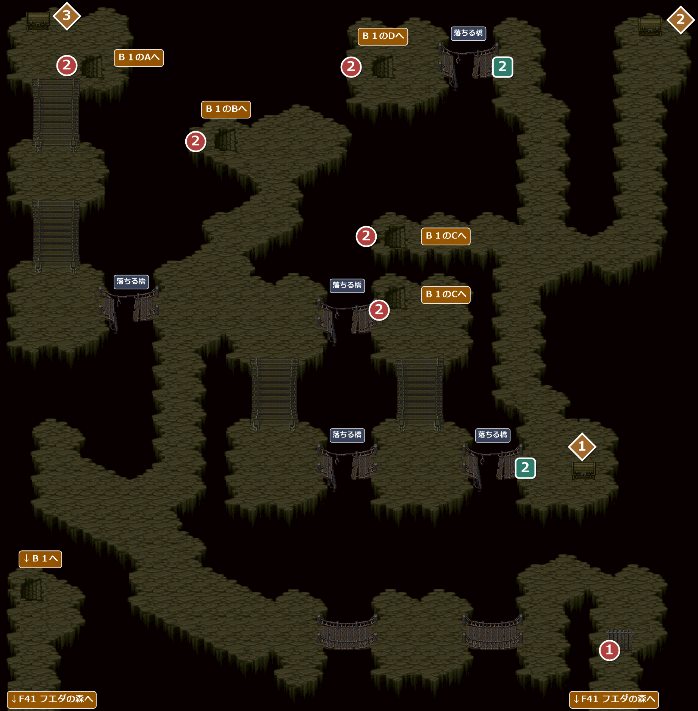
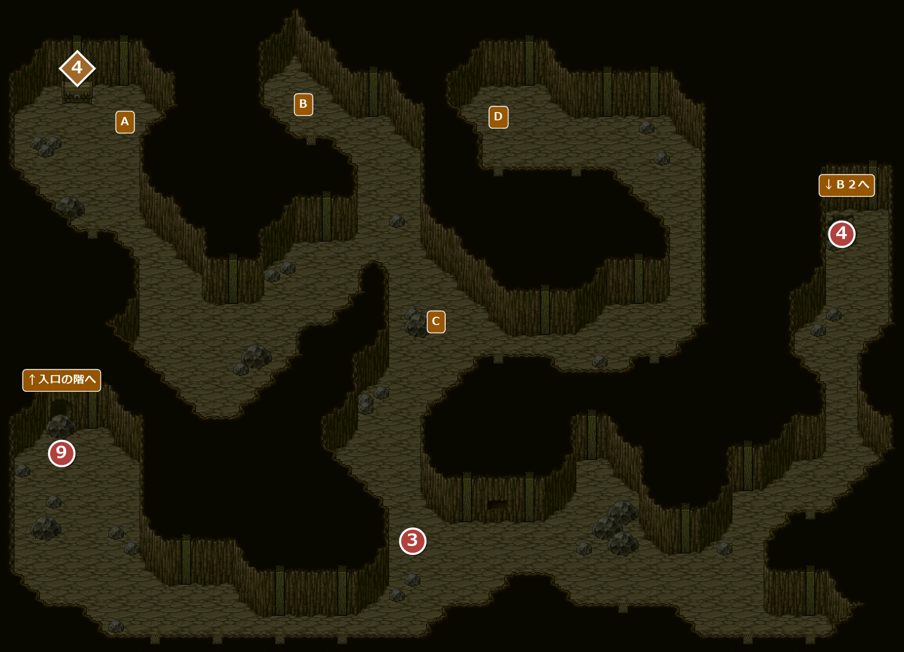
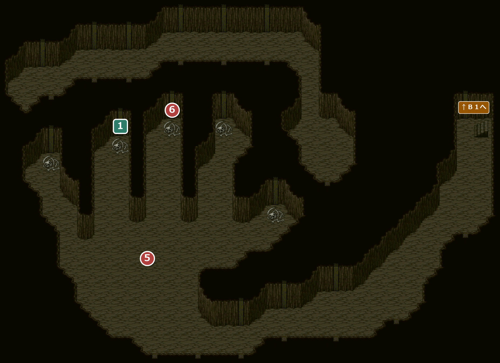
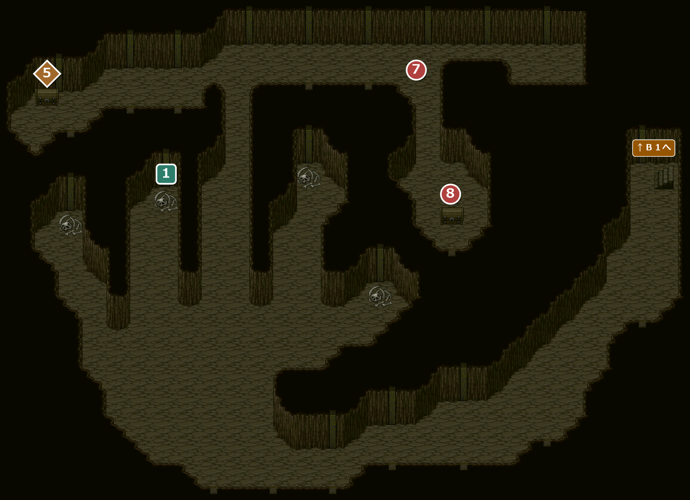

FIELD43
捨てられた坑道
エンカウント率1.17%フエダの森の西にある、だいぶ前に封鎖された鉱山。入口の鉄格子は町長からもらった鍵で開ける。崩れかけた橋や途切れた階段、落盤など、あちこちでダメージを受ける。
名前 建物・場所→ ほかの FIELD へ1メインイベント1サブイベント1宝箱・落ちている物
4300坑道(入口の階)

エンカウント
1歩ごとに 1.17%(平均 85.3 歩に1回)。戦闘になったときに出る組と、その確率:
| ID | 確率 | 前列 | 後列 |
|---|---|---|---|
| 98 | 22.2% | 坑夫の亡霊 | － |
| 99 | 33.3% | 坑夫の亡霊×2 | － |
| 100 | 22.2% | 坑夫の亡霊×2 | 坑夫の亡霊 |
| 101 | 22.2% | スペクター×2 | － |
「Ｂ１のAへ」などの札は途切れた階段(一方通行)。Ｂ１の同じ英字の場所に落ちる。「落ちる橋」は一度でも乗ると、降りたとたんに崩れ落ちる(渡り切っても、途中で引き返しても同じ)。
！左下の「↓Ｂ１へ」の洞窟は、最初は「おや、この先は行きどまりだ…」で進めない。Ｂ１の崩れかけた岩(⑨)を崩すと、Ｂ１とつながる。
イベント
1
鉄格子
場所: 入口の鉄格子(X102-104 Y111)
大きな鍵のかかった鉄格子。町長からもらった坑道の鍵を使うと開く(鍵はなくなる)。
！鍵を持たずに調べると、アイリス「だいぶ前に封鎖された鉱山みたいね…鍵がないと先に進めないわ。とりあえずあきらめましょう…」。鍵を持っていると「町長さんからもらった鍵、使ってみたら？」と言う。
次へ途切れた階段からＢ１へ(②)。
2
途切れた階段
場所: 入口の階の5か所(X18 Y13-15・X40 Y25-27・X68 Y41-43・X68 Y51-53・X66 Y13-15)
途中で途切れた階段。「降りる」を選ぶとＢ１へ落ちる。落ちるとパーティー全員の HP が 100 減る(HP は 1 で止まる)。どの階段でも、降りるたびに毎回ダメージを受ける。
次へＢ１の岩棚へ(③)。
サブイベント
2
橋の復活
場所: 入口の階の右側の2本の橋(X84 Y79-81・X78 Y13-15)
落ちた橋の前で橋の絵を使うと、橋が元に戻る(また乗ると落ちる)。直せるのは右側の2本だけで、橋の絵は1回使うとなくなるので、直せるのはどちらか1本。ほかの3本の橋で使っても何も起きない。
※ 落ちた橋ならどれでも直せるわけではない。
※ 落ちた橋ならどれでも直せるわけではない。
！この2本の橋が落ちたときに橋の絵を持っていると、アイリス「ね、ここで橋の絵を使うと、橋が復活するんじゃない？」。
バグこのとき喋るアイリスは、アイリスがパーティーにいるか確かめない。泥の町ホタでアイリスが抜けてからイントラダで戻るまでの間でも、いないはずのアイリスが喋る。
宝箱・落ちている物
1
宝箱
場所: 鉄格子の北(X96-100 Y83)
「箱の中には、黒い砂の入った小袋が入っていた。」
埋もれた階段(④)で、シャベルの代わりにダメージなしで使える。
埋もれた階段(④)で、シャベルの代わりにダメージなしで使える。
入手 袋に入った黒砂
袋に入った黒砂
2
宝箱
場所: 北東の端(X108-110 Y9)
「箱の中には、橋の絵が描かれた１枚の紙が入っていた。なにかの呪文だろうか…」
アイリスが、橋を直す呪文ではと言う。1回使うとなくなる(サブ2)。
アイリスが、橋を直す呪文ではと言う。1回使うとなくなる(サブ2)。
入手橋の絵
バグこのとき喋るアイリスは、アイリスがパーティーにいるか確かめない。泥の町ホタでアイリスが抜けてからイントラダで戻るまでの間でも、いないはずのアイリスが喋る。
3
宝箱
場所: 北西の端(X6-10 Y9)
「箱の中には、誰かが忘れたのだろうか、数枚の金貨が入っていた。」
入手300GOLD
4301Ｂ１

エンカウント
1歩ごとに 1.17%(平均 85.3 歩に1回)。戦闘になったときに出る組と、その確率:
| ID | 確率 | 前列 | 後列 |
|---|---|---|---|
| 99 | 22.2% | 坑夫の亡霊×2 | － |
| 100 | 22.2% | 坑夫の亡霊×2 | 坑夫の亡霊 |
| 101 | 22.2% | スペクター×2 | － |
| 102 | 33.3% | 坑夫の亡霊×3 | 坑夫の亡霊×3 |
英字だけの札は、入口の階の途切れた階段を降りて落ちる場所。Ｂ１から入口の階へ上がる道は、崩れかけた岩(⑨)を崩すまで無い。
「↓Ｂ２へ」の階段は、中指の先(⑥)で坑道の歌を使う前は指の先が閉じているＢ２に、使った後は中指の先が開いているＢ２に着く。歌を使った後は、指の先が閉じている方のＢ２には二度と来られない。
「↓Ｂ２へ」の階段は、中指の先(⑥)で坑道の歌を使う前は指の先が閉じているＢ２に、使った後は中指の先が開いているＢ２に着く。歌を使った後は、指の先が閉じている方のＢ２には二度と来られない。
イベント
3
岩棚の言葉
場所: Ｂ１の南の壁のへこみの前(X52-56 Y67-71)
主人公が壁のへこみに気づき、岩棚に掘られた言葉を見つける。
“神の左手 指先にて歌を捧げよ 中指は闇に 薬指は光に 他の指は道を開かず”
そばに古い楽譜が挟まっていた。
“神の左手 指先にて歌を捧げよ 中指は闇に 薬指は光に 他の指は道を開かず”
そばに古い楽譜が挟まっていた。
入手 坑道の歌
坑道の歌
！岩棚の前(X64-66 Y69)に立つと、いつでも言葉を読み直せる。
次へＢ１の東の埋もれた階段へ(④)。
4
埋もれた階段
場所: Ｂ１の東の端(X110-112 Y29-31)
地下への階段が埋まっている。袋に入った黒砂(爆薬)を使えば吹き飛ばせる。シャベルでも掘り起こせるが、パーティー全員の HP が半分になる。使った方の道具はなくなる。
！初めて調べたときは、手持ちの道具によってライオネルの一言が変わる。黒砂を持っていれば「そういえば、さっき爆薬、手に入れたんじゃないのか？」、黒砂もシャベルも無ければ「町に戻れば手に入るだろう。シャベルくらいな」。
次へ↓Ｂ２へ(⑤)。
9
崩れかけた岩
場所: Ｂ１の西の端(X8-10 Y59)
新鮮な空気が流れてくる崩れかけた岩。「岩を崩す」を選ぶと落盤が起き、パーティー全員の HP が半分になる(HP は 1 で止まる)。岩は取り除かれ、入口の階の左下とつながる。⑧より前に崩してもよい。
Ｂ１から出る道はここしかない(途切れた階段は登れない)。
Ｂ１から出る道はここしかない(途切れた階段は登れない)。
次へ入口の階の左下からF40 フエダの町の⑦へ(フィデレに確かめる)。
宝箱・落ちている物
4
宝箱
場所: Ｂ１の北西(X10-12 Y15)
「箱を開けると、中には薬のビンが入っていた。」
入手 朱色の小ビン×5
朱色の小ビン×5 スーパーのどあめ×5
スーパーのどあめ×5
4302Ｂ２(指の先が閉じている方)

エンカウント
1歩ごとに 1.17%(平均 85.3 歩に1回)。戦闘になったときに出る組と、その確率:
| ID | 確率 | 前列 | 後列 |
|---|---|---|---|
| 100 | 22.2% | 坑夫の亡霊×2 | 坑夫の亡霊 |
| 101 | 22.2% | スペクター×2 | － |
| 102 | 22.2% | 坑夫の亡霊×3 | 坑夫の亡霊×3 |
| 103 | 33.3% | 坑夫の亡霊×3 | スペクター×2 |
イベント
5
神の左手
場所: Ｂ２の手のひら(X26-44 Y59-61・X20-48 Y73)
手のひらの辺りを2回通ると、アイリスがこの洞窟が大きな手の形をしていると気づき、岩棚の言葉の“神の左手”に思い当たる。
次へ中指の先へ(⑥)。
6
中指の先
場所: Ｂ２の中指の先のガイコツ(X40-42 Y29-31)
中指の先で坑道の歌を使うと景色が変わり、中指の先から北へ道が開く(“中指は闇に”)。この後、指の先が閉じている方のＢ２には二度と来られない(Ｂ１の階段から降りると、中指の先が開いているＢ２に着く)。
！神の左手(⑤)に気づいた後は、ここでアイリスが「これが手なら、ここが中指の先なのかな？ 中指…そういえば、どこかで何か、書いてあったような…」と言う。中指・薬指以外の指先で歌を使っても、何も起きない。
次へ中指の先から北へ(⑦)。
サブイベント
1
薬指の先
場所: Ｂ２の薬指の先のガイコツ(X28-30 Y33-35)
薬指の先で坑道の歌を使うと、強い光に包まれる(“薬指は光に”)。パーティー全員のHPとSPが全回復する。効果があるのは1回だけで、中指で歌を使う前と後のＢ２を合わせて1回。
！神の左手(⑤)に気づいた後は、ここでアイリスが「これが手なら、ここが薬指の先？ なにか、手について書いてあったわよね…」と言う。
4303Ｂ２(中指の先が開いている方)

エンカウント
1歩ごとに 1.17%(平均 85.3 歩に1回)。戦闘になったときに出る組と、その確率:
| ID | 確率 | 前列 | 後列 |
|---|---|---|---|
| 101 | 22.2% | スペクター×2 | － |
| 102 | 22.2% | 坑夫の亡霊×3 | 坑夫の亡霊×3 |
| 103 | 22.2% | 坑夫の亡霊×3 | スペクター×2 |
| 104 | 33.3% | スペクター×2 | スペクター |
中指の先(⑥)で坑道の歌を使った後は、Ｂ１の階段から降りるとこちらのＢ２に着く。
イベント
7
8
黒の胴
場所: Ｂ２の北東の部屋(X76-78 Y39)
古びた箱の中にはリュートのパーツが入っていて、リュートの胴が黒の胴になる。しかしオードは無く、アイリスはまたフィデレが間違えたのではと疑う。
入手 黒の胴
黒の胴
次へＢ１へ戻り、崩れかけた岩へ(⑨)。
宝箱・落ちている物
5
宝箱
場所: Ｂ２の北西(X8-10 Y19)
「箱を開けると、中には魔法の盾と薬のビンが入っていた。」
入手 地の盾興奮剤×3
地の盾興奮剤×3
没イベント情報
- 没岩棚の前で楽譜を見つける場面が、もう1つ残されている … Ｂ１の岩棚の前(X64-66 Y69)のスクリプトの先頭で飛ばされていて、出ない。実際に出るのは、手前で壁のへこみに気づいて歩み寄る場面(③)で、楽譜を見つけたかどうかの印も共通おや、岩棚の中に、誰かのいたずら書きだろうか、掘られた言葉が…“神の左手 指先にて歌を捧げよ 中指は闇に 薬指は光に 他の指は道を開かず”楽譜をまだ見つけていないときアイリス「なんの意味かしら？」主人公「さあ…おや？？ここに、何か紙が…お！古い楽譜だ！」